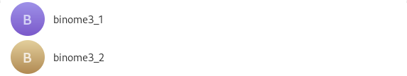
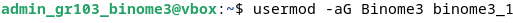
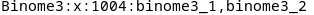
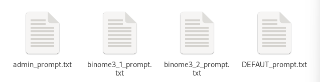
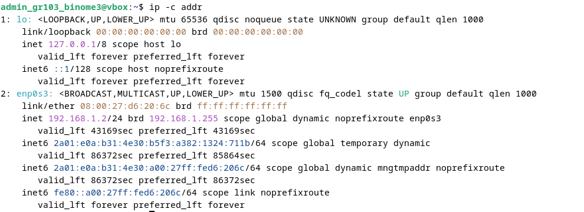
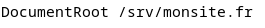
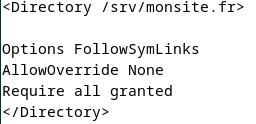
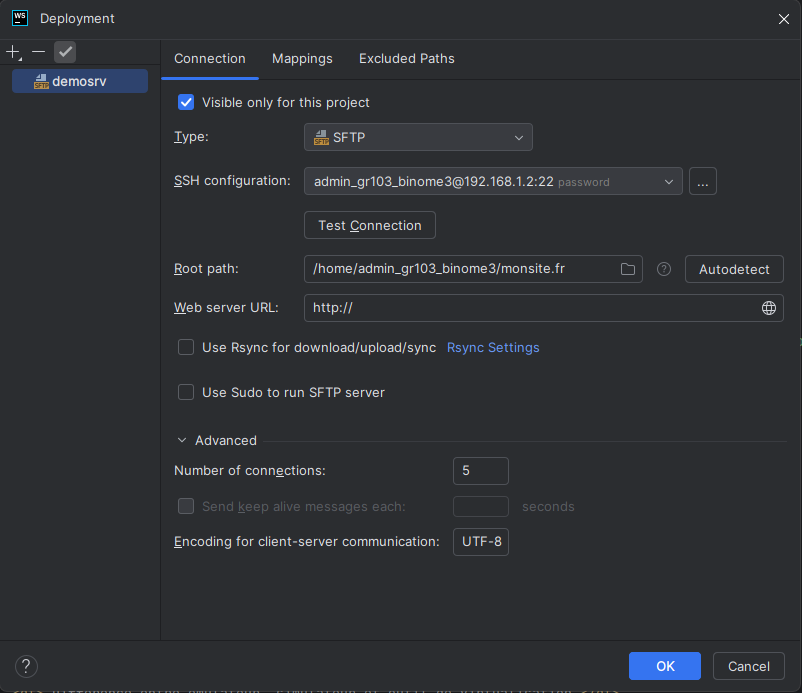

Création des différents utilisateurs
La création d'utilisation se fait via l'utilisation de la commande useradd.
.png)
.png)

Après leur création, nous les mettons dans un groupe nommé Binome3.
Pour créer le groupe, la commande groupadd fut utilisé.
Ensuite, en utilisant la commande usermod avec les options a et G
(l’option a doit être utiliser avec l’option G sinon la commande ne fonctionne pas).
Nous ajoutons les utilisateurs (binome3_1 et binome3_2) dans le groupe Binome3.

Pour vérifier que les utilisateurs sont bien dans le groupe, nous pouvons utiliser
la commande getent group, listant tous les groupes existant avec les utilisateurs dedans.

Personnalisation d’une invite de commande
Nous avons créé quatre fichiers différents pour personnaliser l’invite de commande.
Il existe trois fichiers pour les trois différents utilisateurs et un fichier pour le PS1 de défaut.

Chaque invite de commande a une couleur différente pour le nom de l’utilisateur indiqué par [\033[couleur\]].
Il faut le mettre avant le nom de l’utilisateur pour qu’il est la couleur voulu. Le \w affiche le chemin courant.
La dernière couleur (noir) est la même pour tout le monde, elle va permettre de changer la couleur en noir pour le reste du texte
(après le chemin courant, le texte est en noir).


Pour utiliser les personnalisation, il faut juste stocker le contenu du fichier dans une variable avec la commade :
maVariable=$(cat chemin vers le fichier)

Puis mettre le contenu dans PS1.
Installation et configuration d’un service web
Nous avons décidé d’utiliser Apache configurer le serveur web.
Avant de pouvoir configurer Apache, il faut installer Openssh qui permettent des
communications sécurisées sur un réseau en utilisant le protocole SSH.
Pour l’installer, nous devons utiliser la commande sudo apt install openssh-server.
Pour le lancer le serveur, nous utilisons l’ip de la machine virtuelle (obtenu avec ip -c addr).


Cette commande permet d’ouvrir le serveur avec comme clé 192.168.1.2.
L’installation de apache2 se fait via la commande sudo apt install apache2.

Après l’installation le serveur se lance automatiquement ou nous pouvons le lancer avec la commande sudo service apache2 start.
Nous devons créer un nouveau répertoire pour stocker les fichiers html et css mais aussi le répertoire a indiqué à apache2 pour afficher le site.

Il faut maintenant configurer les fichiers d’apache pour que notre site s’affiche. Dans le répertoire

Nous pouvons trouver un lien vers un fichier de configuration par défaut d’apache.

En utilisant la commande suivante nous pouvons modifier le chemin par défaut par le chemin absolu vers notre répertoire de notre site web.

L’emplacement où changer le chemin (celui par défaut /var/www/html)

Ensuite, nous devons modifier le fichier apache2.conf, se trouvant dans le dossier /etc/apache2, pour préciser où est-ce qu’apache doit travailler.
Il faut décommenter les lignes suivantes et indiquer le lien du répertoire qui contient les fichiers du site web.

Il faut maintenant créer un lien dans le répertoire srv (un répertoire pour les données utilisées par un service) vers le répertoire « monsite.fr ».

Sur WebStorm, nous devons déployer notre site web en indiquant le serveur et le chemin absolu vers le répertoire qui va contenir tous les fichiers.

Nous pouvons voir le site en tapant l’adresse IP de la machine virtuelle.